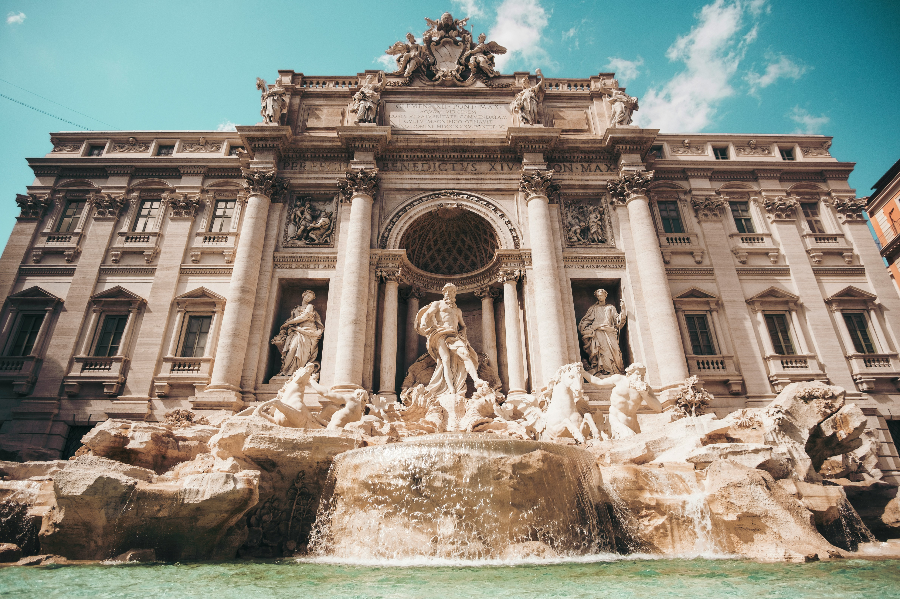

The Landmarks and History of Italy
Italy is well known for its Roman ruins, such as the Colosseum and the Pantheon, Renaissance masterpieces in Florence, and unique Venetian structures. Amid Italy’s rich history spanning empires, city-states, and artistic rebirth, the distinct regional cultures and continuous innovation in architecture and art are also evident in sites like Pompeii, which preserves daily life, and the Leaning Tower of Pisa, a marvel of architectural wonder.
Activities and Scenery in Italy
Italy contains an immense variety of activities amid its stunning scenery. The Dolomites in Northern Italy offer dramatic mountains for hiking, skiing, and mountain biking, as well as unique summer classical music concerts. The Amalfi Coast and Cinque Terre in Southern Italy have colorful cliffside villages, coastal walks, seafood, and Mediterranean views. Lake Como and Sicily offer elegant villas, serene waters, beautiful beaches, and rocky shores. Surely, Italy can grasp the interest of any tourist.
Most Visited Tourist Attractions in Italy
A Michelin guide to the best restaurants in Italy.
- The Colosseum
- Cattedrale di Santa Maria del Fiore
- Leaning Tower of Pisa
- Ancient Roman Forum
- Trevi Fountain
- Capri Island
- Cinque Terre
- Navona Square
- Doge’s Palace
- San Marco Basilica
Famous Italian Dishes
- Margherita Pizza
- Tiramisu and Gelato
- Risotto Alla Milanese
Gallery


